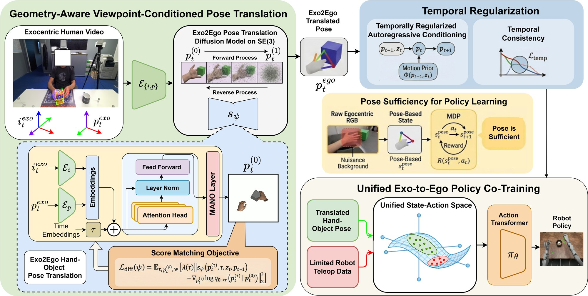
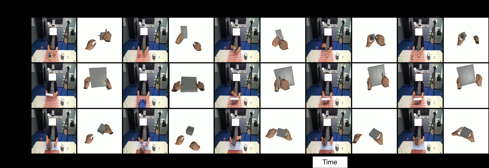
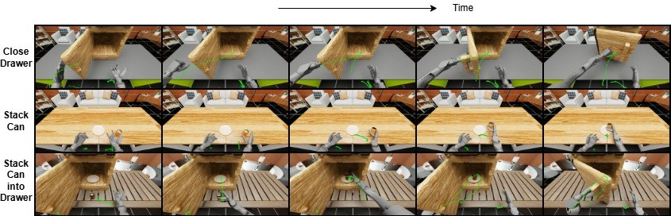

Geometry-Aware Policy Transfer from Exocentric Human Demonstrations
Learning robot manipulation policies from large-scale human videos is challenging due to the viewpoint mismatch between third-person observations and egocentric robot control. To this end, we introduce Exo2EgoPolicy, a geometry-aware framework that learns egocentric manipulation policies from monocular exocentric video via viewpoint-aligned pose translation. Unlike prior Exo→Ego approaches that rely on diffusion-based pixel synthesis and often produce temporally inconsistent predictions, our method operates directly on a structured pose manifold and explicitly models the geometric ambiguity inherent in monocular observation.
We formulate exocentric-to-egocentric translation as a viewpoint-conditioned latent variable model on the $SE(3)$ manifold that disentangles pose from camera transformation and captures the ambiguity induced by unknown camera extrinsics. Under bounded viewpoint motion, the formulation yields pose trajectories that are identifiable up to a global rigid transformation and supports stable sequential inference through temporal regularization. Beyond representation alignment, we show that for quasi-static manipulation tasks whose rewards depend primarily on relative hand–object geometry, pose captures the key task-relevant information required for policy learning. This enables policy co-training on pose-translated human demonstrations alongside limited robot teleoperation data within a unified human–robot state space.
Empirically, Exo2EgoPolicy improves temporal consistency, cross-view alignment, and out-of-distribution policy transfer compared to pixel-based translation and other cross-view co-training baselines, achieving 20–30% higher task success on manipulation benchmarks. These results suggest that geometry-aligned pose representations provide a scalable foundation for cross-view policy learning from human video.
Instead of hallucinating egocentric pixels, Exo2EgoPolicy translates third-person human video into first-person hand–object pose on the $SE(3)$ manifold. Geometry-aligned poses are temporally stable and provide a sufficient statistic for manipulation, so they can be co-trained directly with limited robot teleoperation data.

Exo→Ego translation is cast as a viewpoint-conditioned latent diffusion model over the $SE(3)$ manifold. Predicting the hand pose relative to the object $(p^{\text{obj}}_t)^{-1}\!\cdot p^{\text{hand}}_t$ marginalizes out the unknown camera, yielding trajectories identifiable up to a global rigid transformation.
A forward kinematic motion prior conditions generation on the previous state, with a Lie-group temporal consistency loss. With an $L$-Lipschitz transition ($L<1$), the cumulative trajectory error is uniformly bounded by $\epsilon/(1-L)$ — suppressing jitter.
Modeling manipulation as an MDP, we show that for quasi-static tasks whose reward depends on relative hand–object geometry, pose is a sufficient statistic — a policy on pose attains the same optimal value as one on raw RGB, while being invariant to visual nuisances.
The human hand is treated as a distinct embodiment in the same kinematic space as the robot end-effector. An Action Transformer policy is trained via joint behavioral cloning over robot teleoperation and pose-translated human data.


Across four generalization splits, Exo2EgoPolicy outperforms pixel-space baselines on every metric, reducing PA-MPJPE by ~27% over the strongest baseline (EgoX) and improving F@5mm by over 30% on the most challenging Unseen Actions split.
| Method | PA-MPJPE ↓ | AUCJ ↑ | PA-MPVPE ↓ | F@5mm ↑ | F@15mm ↑ |
|---|---|---|---|---|---|
| Pix2PixHD | 42.6 | 0.312 | 48.4 | 0.142 | 0.412 |
| Exo2Ego-V | 24.1 | 0.518 | 26.3 | 0.312 | 0.645 |
| EgoWorld | 19.4 | 0.612 | 22.5 | 0.421 | 0.762 |
| 4Diff | 18.2 | 0.635 | 20.1 | 0.448 | 0.782 |
| EgoX | 15.7 | 0.684 | 17.5 | 0.521 | 0.844 |
| Ours | 11.4 | 0.772 | 12.8 | 0.685 | 0.912 |
Unseen Objects split on H2O. Best in bold.
On the Ego Humanoid Manipulation Benchmark, our pose-space translation surpasses all baselines, including the egocentric-pretraining method EgoVLA, under both seen and unseen visual settings.
| Method | Short — Seen | Short — Unseen | Long — Seen | Long — Unseen |
|---|---|---|---|---|
| ACT | 24.9 | 24.9 | 2.2 | 0.6 |
| EgoVLA-NoPretrain | 64.6 | 51.3 | 26.7 | 11.2 |
| Exo-only co-training | 65.7 | 52.7 | 27.6 | 12.1 |
| EgoWorld | 70.5 | 58.5 | 34.1 | 16.1 |
| 4Diff | 72.9 | 62.5 | 37.4 | 19.7 |
| EgoX | 75.5 | 66.6 | 41.5 | 23.9 |
| EgoVLA | 77.8 | 69.1 | 45.9 | 28.8 |
| Ours | 81.9 | 73.7 | 53.3 | 36.1 |
Mean Success Rate across short- and long-horizon tasks. Best in bold.
@article{basak2025exo2egopolicy,
title = {Exo2EgoPolicy: Geometry-Aware Policy Transfer from
Exocentric Human Demonstrations},
author = {Basak, Hritam and Tabatabaee, Hadi and Yang, Xin and
Gayaka, Shreekant and Qiao, Nan and Sun, Yuyin and
Kuo, Cheng-Hao and Yin, Zhaozheng and Sun, Min},
year = {2025}
}